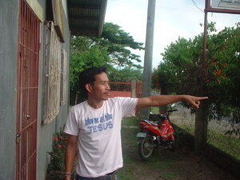

tinurù1 
/tinuduʔ/
v_rt.
“point”
1.
v.
for someone (egtinurù, migtinurù/intinurù, agent, eg><ø-) to point at something (egtinuruen, intinurù/migtinurù/pigtinurù, theme, eg><en-)
Kenè ka egtinuru te baluntu su egkamewu se kemel nu.
Don't point at the rainbow because your finger will go rotten.
Eng. point; choose
Tag. itúrò
Ceb. itudlò; ipakità
Ilo.: itudú
OCM: Gestures and Signs (201)
DDP: Show, let someone see (2.3.1.4)
Online dict status: -
Usage level: M
2.
v.
for someone or something (egtinurù, migtinurù/intinurù, eg><ø-) to show (egtinuruen, intinurù/migtinurù/pigtinurù, theme, eg><en-)
Eng. show
Tag. itúrò
Ceb. itudlò; ipakità
Ilo.: itudú
OCM: Educational Theory and Methods (876)
DDP: Show, let someone see (2.3.1.4)
Online dict status: -
Usage level: M
3.
n.
(alintuturù, aliN-rdpCV-) index finger
Imbukusan ku ka alintuturu ku su napalian.
I wrapped my index finger because it was wounded.
Eng. index finger; finger, index
Tag. hintutúrò
Ceb. tudlò
Ilo.: támmudó
OCM: Ethnoanatomy (826)
DDP: Finger, toe (2.1.3.3)
Online dict status: -
Usage level: M
Updated by: RJH,JLM,AAA,QDL,NJK,QDL,RJH
Last updated: 15/Jul/2013
This page last updated: 03-Jan-2020
Copyright © 2009-2014, Matigsalug Language Christian Association, Inc